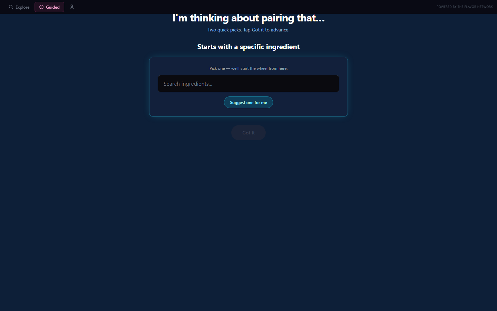
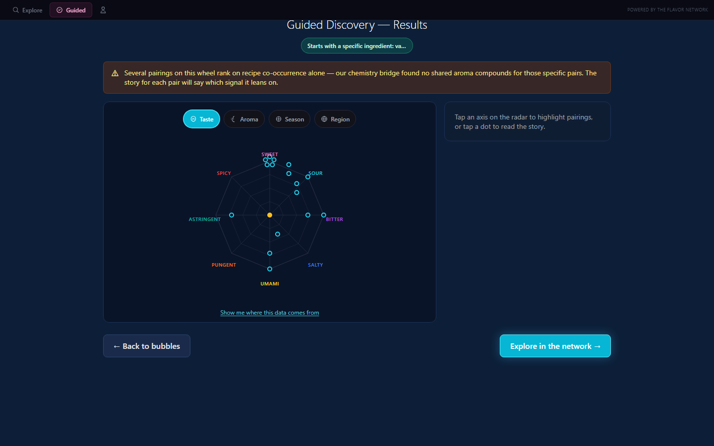
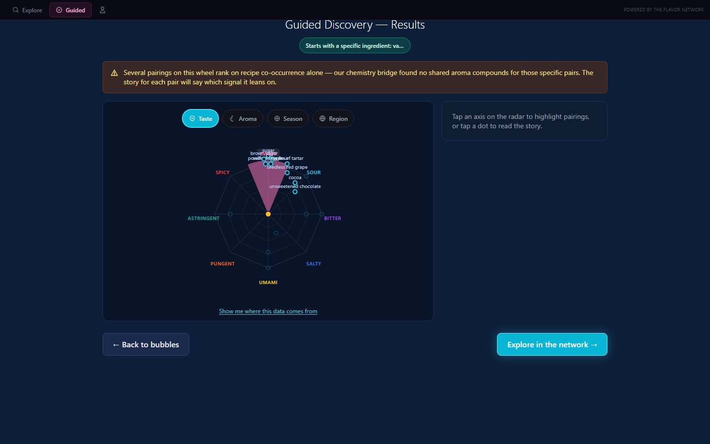
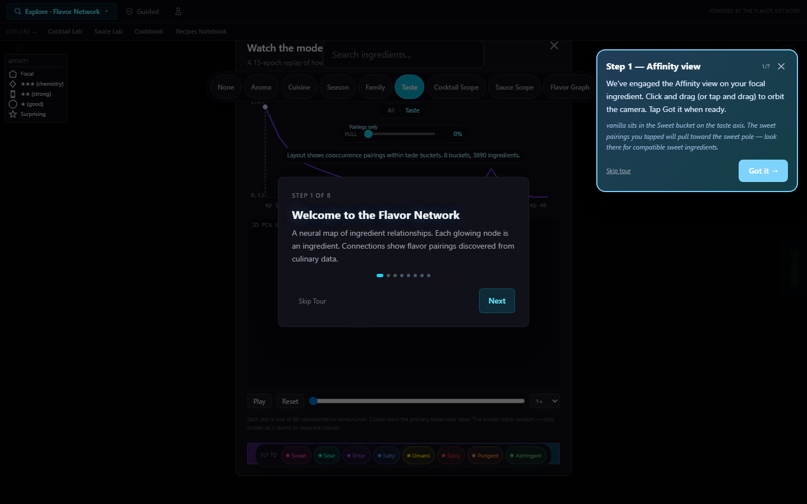

Guided Discovery — Wave 7 polish (live)
6 commits shipped 2026-05-30. focal = auto-suggested, filterType = taste, axis pick = sweet.
1. Screen 1 — ingredient pick

2. Screen 2 — radar with α-mode neighbors + axis-coverage padding + decollided dots

3. Screen 2 — sweet axis armed (wedge fill + matching dots opaque)

4. Network tab — Tour Step 1 popup with axis-intent extraContext line
5. Tour Step 4 — ClusterJoystick + named cluster in extraContext
